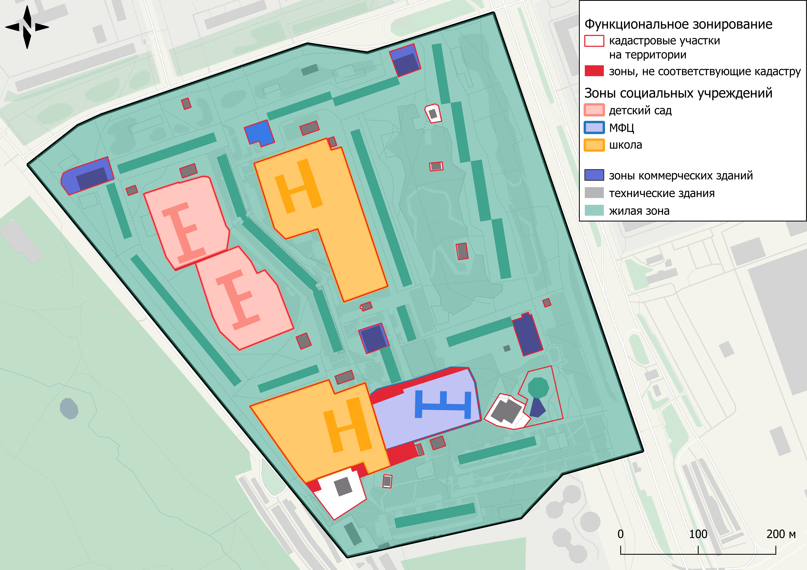

Проект


Подробнее
Функциональное зонирование
Около ⅕ территории занимает соц. инфраструктура, что соответствовало нормам "спальной" застройки 70-х гг. XX века

Коммерция
Около четверти общей площади жилых зон вне зоны 2-минутной пешей доступности до коммерческих объектов
.png)
Аварийность, тип и режим реорганизации жилых зданий
Преобладает типовая панельная застройки (самый распространенный тип — I-515)

Этажность
В соответствии с годами постройки четко отслеживается, что среднеэтажные дома являются наиболее "старыми"

Года постройки
На карте-схеме четко можно проследить хронологию застройки территории с северо-запада на юго-восток

Транзит
Наблюдается нерациональная организация транзита, перегружающая некоторые ветки пешеходного и автомобильного потока, а также наносящая урон приватным зонам


Таблица с данными по жилым домам
| адрес | тип | этаж | год постройки | процент износа | сохранение/кап.ремонт/снос |
|---|---|---|---|---|---|
| Ясеневая улица, 8 к1 | I-515 | 9 | 1976 | 36% | кап.ремонт |
| Ясеневая улица, 10 к1 | I-515 | 9 | 1977 | 35% | кап.ремонт |
| Ясеневая улица, 10 к2 | I-515 | 9 | 1976 | 27% | кап.ремонт |
| Ясеневая улица, 4 | I-515 | 9 | 1975 | 36% | кап.ремонт |
| Шипиловский проезд, 69 | I-515 | 9 | 1976 | 40% | кап.ремонт |
| Каширское шоссе, 146 к1 | П-3/22 | 16 | 1977 | 34% | сохранение |
| Каширское шоссе, 146 к2 | П-3/16 | 16 | 1976 | 34% | сохранение |
| Каширское шоссе, 142 к3 | П-3/16 | 16 | 1977 | 35% | сохранение |
| Каширское шоссе, 142 к2 | П-3/22 | 16 | 1977 | 34% | сохранение |
| Каширское шоссе, 140 | II-68 | 9 | 1979 | 34% | сохранение |
| Каширское шоссе, 138 | II-68 | 12 | 1979 | 34% | сохранение |
| Каширское шоссе, 136 | II-68 | 12 | 1977 | 27% | сохранение |
| Каширское шоссе, 134 | II-68 | 12 | 1976 | 35% | сохранение |
| Шипиловский проезд, 71 | I-515 | 9 | 1976 | 35% | кап.ремонт |
| Ясеневая улица, 6 | П-49 | 9 | 1976 | 35% | снос |
| Шипиловский проезд, 67 к1 | I-515 | 9 | 1976 | 36% | кап.ремонт |
| Каширское шоссе, 144 к1 | И-1279 | 24 | 1997 | 28% | сохранение |
| Каширское шоссе, 144 к1 | I-515 | 9 | 1978 | 35% | сохранение |
Выводы
- были выявлены критические нарушения в пространственной организации территории, в особенности, благодаря плотной застройке и расположению школ и детских садов во дворах
- недоиспользование потенциала рельефа
- часть объектов представляются опасными по отношению к дворовым территориям
- нарушение в расположении и использовании микропространств
- нарушение приватности пространства
- изменение в организации не предвидится в краткосрочной перспективе из-за сохранения существующей сетки расположения жилых домов